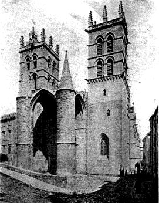

|
| A B C D E F G H I J K L M N O P Q R S T U V W X Y Z |
The Diocese of Montpellier (Montis Pessulani) comprises the department of Hérault, and is a suffragan of Avignon. When the Concordat of 1802 reestablished this diocese, it accorded to it also the department of Tarn, which was detached from it in 1822 by the creation of the Archdiocese of Albi; and from 1802 to 1822, Montpellier was a suffragan of Toulouse. A Brief of 16 June, 1877, authorized the bishops of Montpellier to call themselves bishops of Montpellier, Béziers, Agde, Lodève, and Saint-Pons, in memory of the different dioceses united in the present Diocese of Montpellier.
Maguelonne was the original diocese. Local traditions, recorded in 1583 by Abbé Gariel in his "Histoire des évêques de Maguelonne", affirm that St. Simon the Leper, having landed at the mouth of the Rhône with St. Lazarus and his sisters, was the earliest apostle of Maguelonne. Gariel invokes in favour of this tradition a certain manuscript brought from Byzantium. But the chronicler, Bishop Arnaud de Verdale (1339-1352) was ignorant of this alleged Apostolic origin of Maguelonne. It is certain that the tombstone of a Christian woman named Vera was found at Maguelonne; Le Blant assigns it to the fourth century. The first historically known Bishop of Maguelonne was Boetius, who assisted at the Council of Narbonne in 589. Maguelonne was completely destroyed in the course of the wars between Charles Martel and the Saracens. The diocese was then transferred to Substantion, but Bishop Arnaud (1030-1060) brought it back to Maguelonne which he rebuilt. Near Maguelonne had grown up by degrees the two villages of Montpellier and Montpellieret. According to legend, they were in the tenth century the property of the two sisters of St. Fulcran, Bishop of Lodève. About 975 they gave them to Ricuin, Bishop of Maguelonne. It is certain that about 990 Ricuin possessed these two villages; he kept Montpellieret and gave Montpellier in fief to the family of the Guillems. In 1085 Pierre, Count of Substantion and Melgueil, became a vassal of the Holy See for this countship, and relinquished the right of nomination to the Diocese of Maguelonne. Urban II charged the Bishop of Maguelonne to exercise the papal suzerainty, and he spent five days in this town when he came to France to preach the Crusade. In 1215 Innocent III gave the countship of Melgueil in fief to the Bishop of Maguelonne, who thus became a temporal lord.

CATHEDRALMONTPELLIER
From that time the Bishop of Maguelonne had the right of coinage. Clement IV reproached (1266) Bishop Bérenger de Frédol with causing to be struck in his diocese a coin called "Miliarensis", on which was rend the name of Mahomet; in fact at that date the bishop, as well as the King of Aragon and the Count of Toulouse, authorized the coinage of Arabic money, not intended for circulation in Maguelonne, but to be sold for exportation to the merchants of the Mediterranean.
In July, 1204, Montpellier passed into the hands of Peter of Aragon, son-in-law of the last of the Guillems; Jaime I, son of Peter II, united the city to the Kingdom of Majorca. In 1282 the King of Majorca paid homage to the King of France for Maguelonne. Bérenger de Frédol, Bishop of Maguelonne, ceded Montpellier to Philip IV (1292). Jaime III of Majorca sold Montpellier to Philip VI (1349); and the city, save for the period from 1365 to 1382, was henceforth French. Urban V (Guillaume de Grimoard) had studied theology and canon law at Montpellier and was crowned pope by Cardinal Ardouin Aubert, nephew of Innocent VI, and Bishop of Maguelonne from 1352 to 1354; hence the attachment of Pope Urban for this diocese which he favoured greatly. In 1364 he caused the foundation at Montpellier, of a Benedictine monastery under the patronage of St. Germain, and came himself to Montpellier to see the new church (9 Jan.-8 March, 1367). He caused the city to be surrounded by ramparts, in order that the scholars might work there in safety; and finally he caused a large canal to be begun by which Montpellier might communicate with the sea. At the request of King Francis I, who pleaded the epidemics and the ravages of the pirates which constantly threatened Maguelonne, Paul III transferred the see to Montpellier (27 March, 1536). Montpellier, into which Calvinism was introduced in Feb., 1560, by the pastor, Guillaume Mauget, was much troubled by the wars of religion. Under Henry III a sort of Calvinistic republic was installed there. The city was reconquered by Louis XIII (October, 1622).
Among the 54 bishops of Maguelonne, and the 18 bishops of Montpellier, may be mentioned: Blessed Louis Aleman (1418-23), later Bishop of Arles; Guillaume Pellicier (1527-68), whom Francis I sent as an ambassador to Venice, and whose leaning as a humanist and naturalist made him after Scévole de Sainte-Marthe, "the most learned man of his century"; the preacher Pierre Fenouillet (1608-52); François de Bosquet (1657-76), whose historical labours were very useful to the celebrated Baluze; the bibliophile Colbert de Croissy (1696-1738), who induced the Oratorian Pouget to compose in 1702 the famous "Catechism of Montpellier", condemned by the Holy See in 1712 and 1721 for Jansenistic tendencies; Fournier (1806-34), who in 1801 was confined for a time in the madhouse at Bicêtre at the command of Napoleon, for a sermon against the Revolution. Among the numerous councils and synods held at Montpellier, the following merit mention: the council of 1162 in which Alexander III excommunicated the antipope, Victor; the provincial synod of 1195, which was occupied with the Saracens of Spain and the Albigenses; the council of 1215, which was presided over by Peter of Benevento, legate of the Holy See and passed important canons concerning discipline, and declared also that subject to the approval of the pope, Toulouse and all the other towns taken from the Albigenses should be given to Simon de Montfort; the council of 1224, which rejected the request of Raymond, Count of Toulouse. who promised to protect the Catholic Faith and demanded that Amaury de Montfort withdraw his claims to the countship of Toulouse; the council of 1258, which by permitting the seneschal of Beaucaire to arrest ecclesiastics taken in the act of crime, in order to hand them over to the bishop, made way for royal magistrates to exercise a certain power within the limits of ecclesiastical jurisdiction and thus inaugurated the movement as a result of which, under the name of "privileged cases", a certain number of offences committed by ecclesiastics became amenable to lay justice.
Local traditions designate as the first Bishop of Agde, St. Venustus, said to have suffered martyrdom during the legendary invasion of the barbarian, Chrocus, about 407 or 408. The first historically known bishop of Agde is Sophronius who assisted at the Council of Agde in 506.
Local traditions assign as the first Bishop of Béziers the Egyptian saint, Aphrodisius, said to have sheltered the Holy Family at Hermopolis and to have become a disciple of Christ, also to have accompanied Sergius Paulus to Gaul when the latter went thither to found the Church of Narbonne, and to have died a martyr at Béziers. The first historically known bishop is Paulinus mentioned in 418; St. Guiraud was Bishop of Béziers from 1121 to 1123; St. Dominic refused the See of Béziers to devote himself to the crusade against the Albigenses.
Among the fifteen synods held at Béziers must be mentioned that of 356 held by Saturninus of Arles, Arian archbishop, against St. Hilary; those of 1233, 1246 and 1255 against the Albigenses.
Local traditions made St. Aphrodisius arrive at Béziers mounted on a camel. Hence the custom of leading a camel in the procession at Béziers on the feast of the saint; this lasted until the Revolution.
Since the fourteenth century local tradition has made St. Florus first bishop of Lodève, and relates that as a disciple of St. Peter, he afterwards evangelized Haute-Auvergne and died in the present village of St-Flour. It is historically certain that bishops of Lodève have existed since 421; the first historically known bishop is Maternus, who was present at the Council of Agde in 506. Among the bishops of Lodève are: St. George (863-884), previously a Benedictine monk; St. Fulcran (949-1006), who in 975 dedicated the cathedral of St. Genès and founded the Abbey of St. Sauveur; the Dominican Bernard Guidonis (1324-1331); Cardinal Guillaume d'Estouteville (1450-1453), who played an important part as papal legate, also in the rehabilitation of Joan of Arc; the brothers Guillaume Briçonnet (1489-1516) and Denis Briçonnet (1516-1520).
The Abbey of St-Pons was founded in 936 by Raymond, Count of Toulouse, who brought thither the monks of St. Géraud d'Aurillac. By a Bull of 18 Feb., 1318, John XXII raised the abbey to a see.
Special honour is paid in the present Diocese of Montpellier to St. Pons (Pontius) de Cimiez, martyr under Valerian, patron of St-Pons-de-Thomières; Sts. Tiberius and Modestus and St. Florence, martyrs at Agde under Diocletian; St. Severus, Abbot of St. André, at Agde (d. about 500); St. Maxentius, a native of Agde and founder of the Abbey of St-Maixent, in Poitou (447-515); St. Benedict of Aniane, and his disciple and first historian, Saint Ardo Smaragdus (d. in 843); St. Guillem, Duke of Aquitaine, who in 804, founded near Lodève, on the advice of St. Benedict of Aniane, the monastery of Gellone (later St-Guillem du Désert), died there in 812, and under the name of "Guillaume au Court Nez" became the hero of a celebrated epic chanson; St. Etienne, Bishop of Apt (975-1046), born at Agde; Blessed Guillaume VI, Lord of Montpellier from 1121 to 1149 and who died a Cistercian at Grandselve; Bl. Peter of Castelnau, Archdeacon of Maguelonne, inquisitor (d. in 1208); St. Gérard (or Géri), Lord of Lunel (end of thirteenth century); the celebrated pilgrim, St. Roch, who was born at Montpellier about the end of the thirteenth century, saved several cities of Italy from the pest, and returned to Montpellier to live as a hermit, where he died in 1325. The Benedictine Abbey of Aniane (see BENEDICT OF ANIANE) was in the ninth century a centre of monastic reform. The Benedictine Abbey of Valmagne was founded in 1138 by Raymond of Trencavel, Viscount of Béziers. As early as 1180 the Hospital of the Holy Ghost at Montpellier received exposed or abandoned children.
The chief pilgrimages of the diocese are: Notre Dame de l'Ermitage at St-Guillem du Désert (fourteenth century); Notre Dame de Grâce at Gignac, on the site of a sanctuary built by St. Flour, first Bishop of Lodève; Notre Dame de Grau near Agde, on the site of an oratory built in 456 by St. Severus; Notre Dame de Mougères at Mougères (fifteenth century); Notre Dame de Montaigu at Ceyras, a pilgrimage founded by the Franciscans in the first half of the seventeenth century; Notre Dame de Roubignac (dating from the tenth century); Notre Dame du Suc at Brissac, established by the Benedictines; Notre Dame de Trédos, a pilgrimage already in existence in 1612; Notre Dame des Tables at Montpellier, dating from the ninth century, and particularly developed after miracles in 1189. The Church of Notre Dame des Tables disappeared after the Revolution; but the cult transferred to the chapel of the Jesuits is still in vogue, and in 1889, Mgr de Cabrières crowned the statue in the name of the pope. Before the application of the Law of 1901 there were in the diocese, Carthusians, Jesuits, Franciscans, Lazarists, Missionaries of la Salette, Carmelites, Salesians of Don Bosco, and various orders of teaching brothers. Congregations of women native to the diocese are: The Augustinian Sisters of Charity of Our Lady, hospitallers, founded at Béziers in 1646; Sisters of Christian Doctrine, founded in 1853 (mother-house at Ceilhes); Dominican religious founded in 1855 (mother-house at Cette); the Nursing Sisters of Notre Dame auxiliatrice, founded 1845 by the Abbé Soulas (mother-house at Montpellier). At the beginning of the twentieth century the congregations directed in the diocese 2 crèches, 53 infant schools, 1 school for the blind, 1 school for deaf mutes, 8 orphanages for boys, 15 orphanages for girls, 1 institution of preservation,1 establishment for correction, 1 institution of rehabilitation, 8 houses of mercy, 15 establishments for nursing the sick in their homes, 1 hospital for the insane, 6 hospitals or infirmaries. In 1908 the diocese numbered 482,779 inhabitants, 43 parishes, 310 chapels, 27 vicariates.
It is not known exactly at what date the schools of literature were founded which developed into the Montpellier faculty of arts. it may be that they were a direct continuation of the Gallo-Roman schools. The school of law was founded by Placentinus, a doctor from Bologna, who came to Montpellier in 1160, taught there during two different periods, and died there in 1192. The school of medicine was founded perhaps by a graduate of the Spanish medical schools; it is certain that, as early as 1137, there were excellent physicians at Montpellier. The statutes given in 1220 by Cardinal Conrad, legate of Honorius III, which were completed in 1240 by Pierre de Conques, placed this school under the direction of the Bishop of Maguelonne. Nicholas IV issued a Bull in 1289, combining all the schools into a university, which was placed under the direction of the bishop, but which in fact enjoyed a large measure of autonomy. Theology was at first taught in the convents, in which St. Anthony of Padua, Raymond Lullus, and the Dominican Bernard de la Treille lectured. Two letters of King John prove that a faculty of theology existed at Montpellier independently of the convents, in January, 1350. By a Bull of 17 December, 1421, Martin V granted canonical institution to this faculty and united it closely with the faculty of law.
In the sixteenth century the faculty of theology disappeared for a time, when Calvinism, in the reign of Henry II, held complete possession of the city. It resumed its functions after Louis XIII had reestablished the royal power at Montpellier in 1622; but the rivalries of Dominicans and Jesuits interfered seriously with the prosperity of the faculty, which disappeared at the Revolution. The faculty numbered among its illustrious pupils of law Petrarch, who spent four years at Montpellier, and among its lecturers Guillaume de Nogaret chancellor to Philip the Fair, Guillaume de Grimoard, afterwards pope under the name of Urban V, and Pedro de Luna, antipope as Benedict XIII. But after the fifteenth century this faculty fell into decay, as did also the faculty of arts, although for a time, under Henry IV, the latter faculty had among its lecturers Casaubon. The Montpellier school of medicine owed its success to the ruling of the Guilhems, lords of the town, by which any licensed physician might lecture there; there was no fixed limit to the number of teachers, lectures were multiplied, and there was a great wealth of teaching. Rabelais took his medical degrees at Montpellier. It was in this school that the biological theory of vitalism, elaborated by Barthez (1734-1806), had its origin. The French Revolution did not interrupt the existence of the faculty of medicine. The faculties of science and of letters were re-established in 1810; that of law in 1880. It was on the occasion of the sixteenth centenary of the university, celebrated in 1889, that the Government of France announced its intention — which has since been realized — of reorganizing the provincial universities in France.
DIOCESE.--Gallia Christiana, VI (nova, 1739), 223-256,293-383, 525-579, 664-706, 727-831, 1123; and instrumenta, 73-102, 127-166, 263-94, 311-40, 341-411; FISQUET, France pontificale: Montpellier (2 vols., Paris, 1868.); DUCHESNE, Fastes épiscopaux, I; GROUSSET, Hist. du diocèse de Montpellier dans les premiers siècles (Montpellier, 1903); CHARLES D'AIGREFEUILLE, Hist. de la ville de Montpellier, ed. LA PIJARDIÈRE (4 vols., Montpellier, 1875-82); ARNAUD DE VERDALE, Catalogus Episcoporum Magalonensium, ed. GERMAIN (Montpellier, 1881); FABRÈGE, Hist. de Maguelonne (2 vols., Montpellier, 1894-1900); CARTIER, Notice sur la monnaie frappée au XIIIe siècle par les évêques de Maguelonne avec le nom de Mahomet in Revue numismatique, XX (1855),199-227: GUIRAUD, Les fondations du pape Urbain V à Montpellier (3 vols., Montpellier, 1889-91); Cartulaire des abbayes d'Aniane et de Gellone, ed. ALAUS, CASSAN, and MEYNIAL (Montpellier, 1898); SABATIER, Hist. de la ville et des évêques de Béziere (Béziers, 1854); PARIS, Hist. de la ville de Lodève, de son ancien diocèse et de son établissement actuel (Montpellier, 1851); MARTIN, Hist. de la villes de Lodève (2 vols., Montpellier, 1900) SOUPAIRAC, Petit dict. géog. et hist. du diocèse de Montpellier: arrondissement de Saint-Pons-de-Thomières (Montpellier, 1880); BONNET, Bibl. du diocèse de Montpellier in Mélanges de litt. et d'hist. religieuse publiés à l'occasion du jubilé de Mgr de Cabrières, III (Paris, 1899).
Cartulaire de l'Université de M., I (Montpellier, 1890); FOURNIER, Statuts et privilèges des universités, II (Paris, 1891), 1-300: III (1892), 541-5; BOISSIER, Le sixième centenaires de l'univ. de M. in Revues des Mondes (July, 1890); GERMAIN, La faculté de Théol. de M. (Montpellier, 1883); ASTRUC, Mém. pour l'hist. de la faculté de médecine de M. (Paris, 1767).
APA citation. (1911). Montpellier. In The Catholic Encyclopedia. New York: Robert Appleton Company. Retrieved April 26, 2010 from New Advent: http://www.newadvent.org/cathen/10545a.htm
MLA citation. "Montpellier." The Catholic Encyclopedia. Vol. 10. New York: Robert Appleton Company, 1911. 26 Apr. 2010 <http://www.newadvent.org/cathen/10545a.htm>.
Transcription. This article was transcribed for New Advent by Michael Kolarcik, S.J.
Ecclesiastical approbation. Nihil Obstat. October 1, 1911. Remy Lafort, S.T.D., Censor. Imprimatur. +John Cardinal Farley, Archbishop of New York.
Contact information. The editor of New Advent is Kevin Knight. My email address is webmaster at newadvent.org. (To help fight spam, this address might change occasionally.) Regrettably, I can't reply to every letter, but I greatly appreciate your feedback — especially notifications about typographical errors and inappropriate ads.